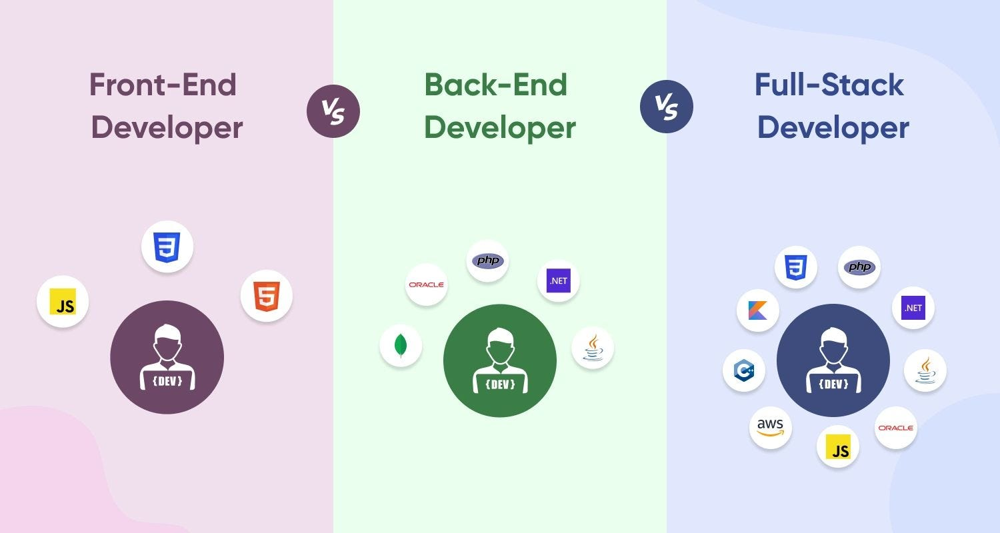

Web Development
Web development- the process of designing, developing and maintaining websites and web apps. It encompasses several different fields, most commonly referring to the programming of websites.
Web development- the process of designing, developing and maintaining websites and web apps. It encompasses several different fields, most commonly referring to the programming of websites.
Web development includes many individual tasks, including web design, web content development, networking, and coding. Among web professionals, "web development" usually refers to the main non-design aspects of building websites: writing markup and coding.
Web development generally is split into two fields: front-end development and back-end development. Front-end developers create the user interface of websites, turning web designs into HTML, CSS, and JavaScript code. Front-end developers must also make sure that websites work consistently across different browsers and devices. Back-end development, also known as server-side development, focuses on the infrastructure behind a website, including APIs, database management, and security. Some choose to be full-stack developers, meaning they work on both the front-end and back-end.
The World Wide Web is often categorised into three generations: Web 1.0, Web 2.0, and Web 3.0 (or Web3). It was invented in 1989, and released to the public in 1993. In the early years of the web, retrospectively referred to as Web 1.0, websites were simply a collection of static HTML files, and had limited interactivity. After the introduction of JavaScript in 1995, websites could contain logic, allowing for interactivity. The following year CSS was released, allowing greater control over the styling of web pages.
In 1999, the term Web 2.0 was coined by Darcy DiNucci. The term later resurfaced in the early 2000s, as websites started to increase in complexity, requiring server-side services in addition to JavaScript. This led to the emergence of various new programming languages and frameworks designed for backend services, such as PHP, Active Server Pages, and Jakarta Server Pages. This enabled websites to do additional server-side processing, such as accessing databases.
Another shift in web development was the release of the iPhone in 2007. This created a new medium for accessing the web, requiring a new approach to web development, and resulting in responsive web design, which allows a single website to appear different depending on the device running it. Later, progressive web apps were introduced, allowing websites to be installed on a device as an independent application.
In the 2010s, JavaScript frameworks began to emerge, creating new ways to manipulate web pages, and increasing compatibility between web browsers. JQuery was popular in the early 2010s, but was later surpassed by other frameworks such as React and Vue.js.
In the mid 2020s, use of AI became prevalent among web developers, with the 2025 Stack Overflow survey showing over 80% of developers saying they use AI at least monthly in their development process.
Front-end web development is the development of the graphical user interface of a website through the use of HTML, CSS, and JavaScript so users can view and interact with that website.
Back-end web development refers to the server-side development of a website or web application. It focuses on databases, scripting, and the architecture of websites. It contains behind-the-scenes activities that occur when performing any action on a website.
Full-stack web development refers to the development of both front-end and back-end portions of an application. Full-stack developers have the skills and expertise to create a fully functional web application.


